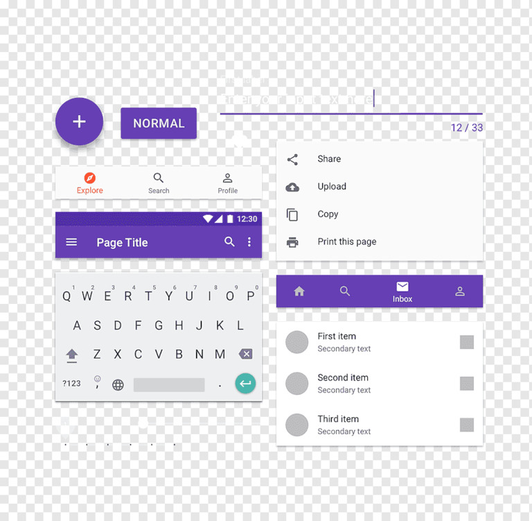

Componentes de React para un desarrollo web más rápido y sencillo. Es el framework de IU para React más popular del mundo.
Material-UI está disponible como un paquete npm. Para instalarlo y
guardarlo en las dependencias de tu package.json,
ejecuta:
// usando npm
npm install @material-ui/core
// usando yarn
yarn add @material-ui/core
Material-UI fue diseñado con la fuente Roboto en mente. Así que asegúrate de seguir estas instrucciones. Por ejemplo, a través de Google Web Fonts:
<link
rel="stylesheet"
href="https://fonts.googleapis.com/css?family=Roboto:300,400,500,700&display=swap"
/>
Para poder utilizar la fuente del componente Icon, primero debes agregar la fuente Material icons. Aquí hay algunas instrucciones sobre cómo hacerlo. Por ejemplo, a través de Google Web Fonts:
<link rel="stylesheet" href="https://fonts.googleapis.com/icon?family=Material+Icons" />
Para poder utilizar los íconos SVG Material precompilados, como los que se encuentran en los demos de íconos, primero debes instalar el paquete @material-ui/icons:
// usando npm
npm install @material-ui/icons
// usando yarn
yarn add @material-ui/iconsLos componentes de Material-UI funcionan aisladamente. Son autosuficientes, y sólo inyectarán los estilos necesarios para su presentación. No dependen de ninguna hoja de estilos global como normalize.css.
En la web oficial de Material UI hay una partado con recursos recomendados para aprender. Puedes acceder haciendo click aquí.